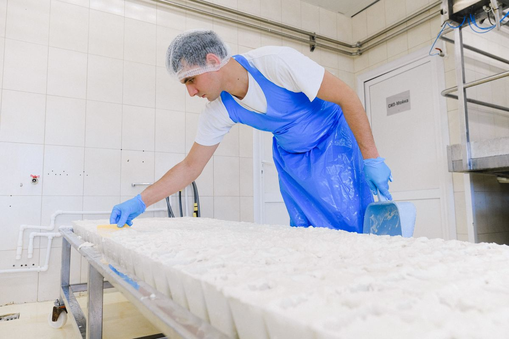

Digital traceability for the factory floor of food plants.
Tablets and sensor stations record each batch as it is made. If one delivery turns out to be unsafe, you pull only the batches at risk and keep the safe food.
Prototype tested on demo dataFirst pilots in 2027Works with or without an ERP
L 260914-03
Feta, 400 g
- Milk inscanned
- Starter culturescanned
- Saltscanned
- Packaging filmscanned
- Vat 3logged
Full history found in 1 min 47 s
Paper records cost a food plant in three ways.
- 01Hours every weekwriting records by hand.
- 02Days at every auditsearching through folders.
- 03Safe food thrown awaywhen one record is missing.
Panthoron records each batch at the line, as it is made. Your team spends less time on paperwork, and an audit takes minutes.
How it works
One batch, three moments.
-
01

Scan
The operator scans each raw material on the tablet.
-
02
Check
Before a batch starts, Panthoron checks every material against the recipe. If one is missing, a supervisor must sign it off with a reason, and the trace report shows it in red.
-
03

Trace
Pick up any box and see its full history in under two minutes. This is precision recall.